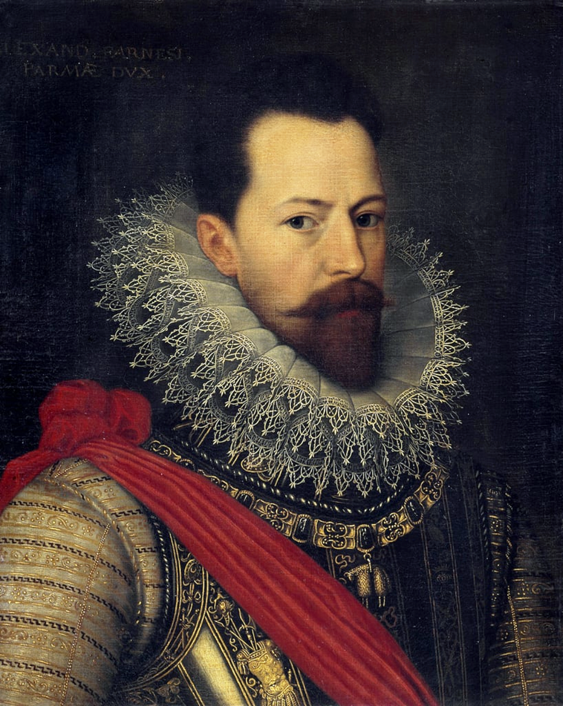
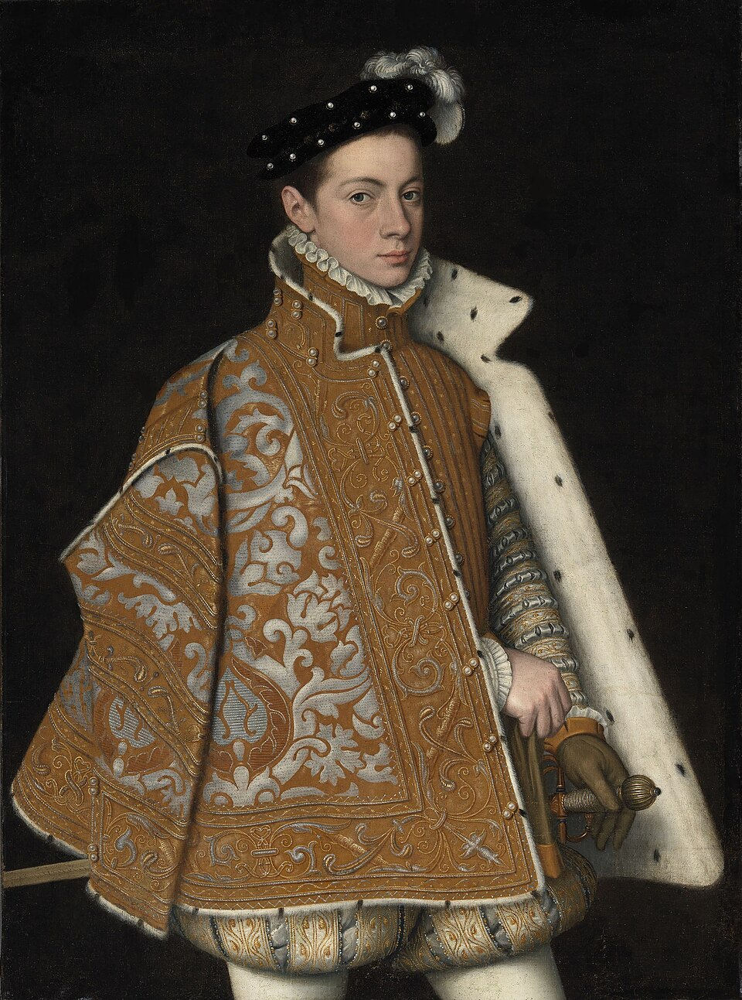
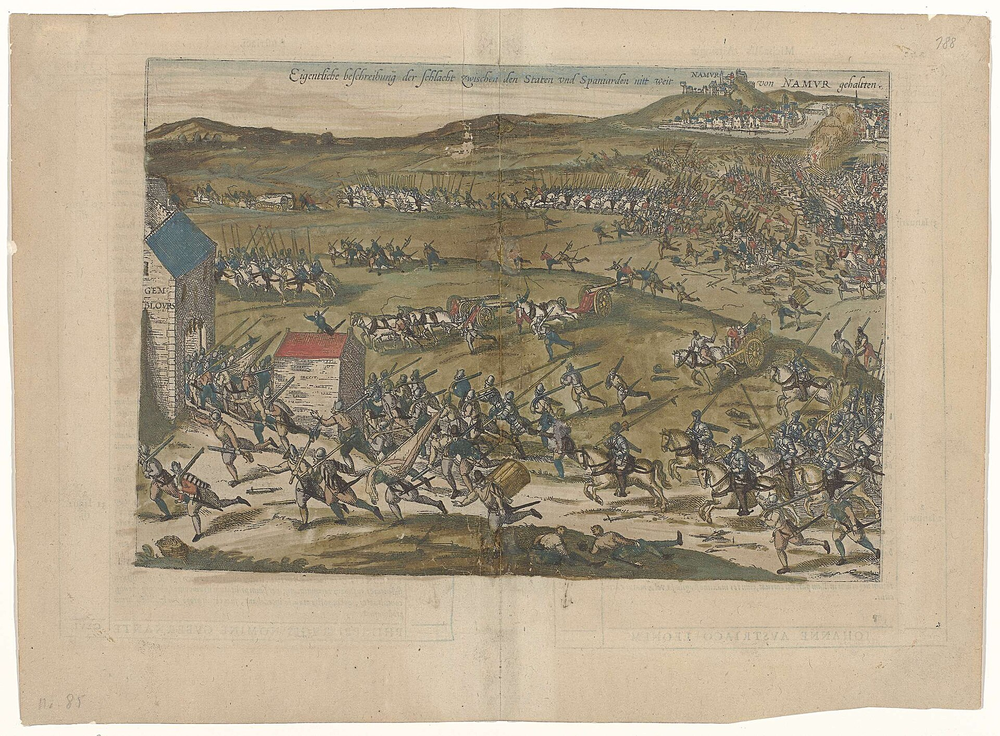
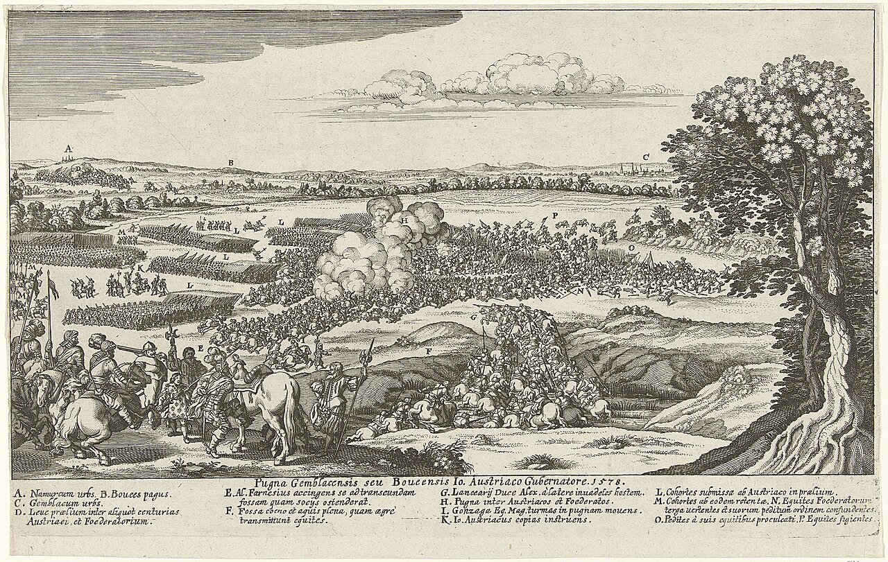
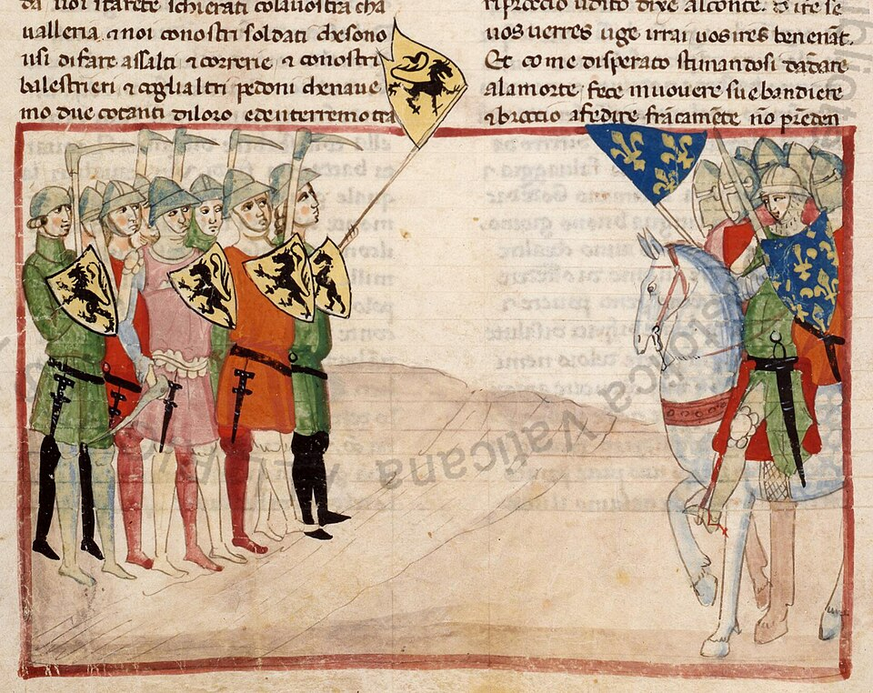
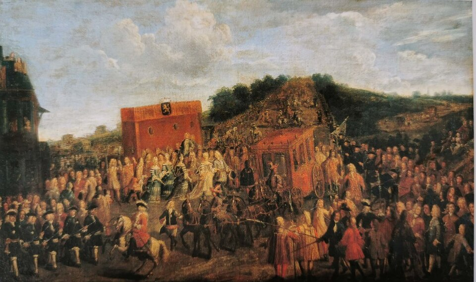
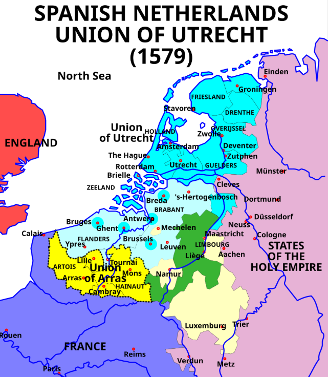
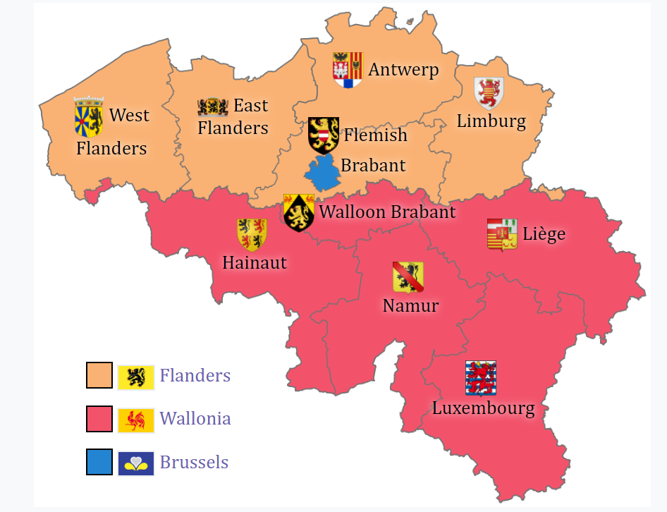

벨기에 이야기 (8) - 손자의 수제자
게시: 2026-08-31T06:30:47+09:00
1577년 가을, 나뮈르 요새에서 농성하던 돈 후안에게 스페인군을 이끌고 온 사람은 당시 32세의 한창 나이의 이탈리아 귀족 파르네제(Alessandro Farnese)였습니다. 그는 돈 후안보다 2살 연상으로서, 어릴 때부터 스페인 왕실에서 함께 자랐을 뿐만 아니라 돈 후안 최대의 업적이었던 오스만 투르크와의 레판토 해전에도 함께 참전했을 정도로 친한 사이였습니다. 이탈리아인인 파르네제는 어쩌다 스페인 왕실에서 어린 시절을 돈 후안과 함께 보냈던 것일까요? 실은 그 둘은 모두 스페인 국왕 펠리페 2세와 친척 사이였습니다. 돈 후안은 펠리페 2세의 아버지인 카를로스 5세의 서자로서 펠리페 2세와 이복형제 사이였고, 파르네제의 어머니도 카를로스 5세의 서녀로서 펠리페 2세는 파르네제의 외삼촌이었습니다. 파르네제의 어머니는 1566년 네덜란드 반란 귀족들이 '거지'라는 별명을 갖게 된 계기를 본의 아니게 마련해 주었던 1566년 당시 저지대 총독 파르마 공작부인 마게리타(Margherita di Parma)였습니다. 그래서 파르네제는 1556년 11살 때 어머니를 따라 브뤼셀에서 잠깐 거주하기도 했습니다. 그러나 그 직후, 어린 파르네제는 마게리타의 남편이자 북부 이탈리아의 유력한 귀족인 아버지 파르마 공작의 충성심을 담보받기 위해 볼모로서 스페인 왕실에 보내졌습니다.

(알레산드로 파르네제입니다. 그는 스페인에서는 물론이고, 적국인 네덜란드와 영국에서도 명장 중의 명장으로 인정받았습니다.) 당시 유럽 왕실에서 그런 볼모는 험한 대접을 받는 존재는 아니었습니다. 어릴 때 더 크고 강력한 왕실에서 그 왕실의 젊은이들과 함께 자라고 배우며 우정을 쌓는 기회를 주어, 본인 스스로가 그 타국 왕실에 대해 개인적인 우호심과 애착을 갖게 만드는 것이 당시 볼모 제도의 핵심이었습니다. 현대에도 작은 나라들의 유력 가문의 자제들은 강대국의 명문대로 유학을 가서 거기서 인맥을 쌓고 자신의 모국보다는 오히려 그 강대국에 스스로 충성하는 경향을 보이기도 하는데, 중근세 유럽의 볼모 제도와 크게 다를 바 없는 행태입니다. 파르네제는 거기에 더해 혈연으로도 스페인 왕실과 맺어져 있었으므로 이후에도 이탈리아인으로서의 정체성보다는 합스부르크 스페인의 장군으로서의 정체성을 가지게 됩니다. 하지만 그는 분명히 로마에서 태어난 이탈리아인으로서 모국어는 이탈리아어였으며, 브뤼셀에 잠깐이나마 거주하며 당시 귀족층의 공용어였던 프랑스어도 배웠을 것이며, 스페인어도 당연히 유창하게 구사했습니다. 실은 그런 외국어 능력보다 더 중요했던 것은 그가 그렇게 다양한 문화에 노출되며 다양한 국적의 사람들과 교류했다는 점이었습니다. 그는 아무리 스페인이 강대국이라고 해도 세상 모든 것이 합스부르크 스페인을 중심으로 흐르지 않는다는 것을 이해하고 있었던 것 같습니다.

(이제 막 스페인 궁정 생활에 익숙해졌을 무렵인 15살 경의 파르네제의 초상화입니다. 오스만 투르크의 예니체리 부대만 해도 기독교인 가정의 어린 아이들을 노예로 잡아와서 이슬람으로 개종시키고 훈련시킨 뒤 오스만 황실의 근위대로 썼다고 하는데, 파르네제도 그와 비슷한 신세라고 할 수 있습니다. 물론 개종까지 당하지는 않았으니 덜 비극적이라고 할 수 있겠지요. 오스만 투르크에게 아이를 빼앗긴 가정에서는 통곡을 했을 것 같지만 실은 가난한 기독교 가정에서는 어떻게든 자기 자식을 예니체리에 집어넣으려고 애쓰기도 했다고 합니다. 예니체리로 들어가면 최소한 일정 수준의 출세는 할 수 있었으니까요.) 레판토 해전 때만 해도 총사령관이었던 외삼촌 돈 후안에 비해 파르네제의 역할은 매우 작아서, 갤리선 3척을 지휘하는 소함대장 정도에 불과했습니다. 그러니 이번에 테르시오 9천 병력의 사령관으로서 부임한 파르네제에게 사람들이 엄청난 기대를 가지고 있었던 것은 아니었습니다. 그나마 이 병력은 룩셈부르크로 마중 나와 있던 돈 후안에게 그대로 인계되었고 파르네제는 그 중 기병대의 지휘관을 맡게 되었을 뿐이었습니다. 이들이 저지대 반란군과 제대로 맞붙은 1578년 1월 말의 젬블루(Gembloux) 전투에서 그 기병대를 이끌고 결정적인 전공을 세울 때도 그의 역할을 매우 중요하게 본 사람은 많지 않았습니다. 당시 스페인군 수중에 있던 나뮈르 앞에는 저지대 반란군 2만 정도가 진을 치고 있었는데, 스페인군이 접근하자 이들은 젬블루로 후퇴하고 있었습니다. 이때 파르네제는 기병대를 이끌고 먼저 반군 근처까지 접근했는데, 스페인 테르시오 본대가 현장에 도착할 때까지는 교전하지 말라는 돈 후안의 지시가 있었지만, 후퇴하던 저지대 반군의 사기나 대오가 그다지 좋지 않다는 것을 파악한 파르네제는 과감히 돌격하여 적진에 대혼란을 일으키고 무질서하게 패퇴시키는 공로를 세웠습니다. 뒤어어 도착한 테르시오 본대까지 합류하자, 전투는 일방적으로 흘러갔습니다. 결국 반군 2만 중 6천이 전사하고 수백의 포로를 내었으며, 잔당이 도망쳐 들어간 젬블루도 결국 항복했습니다. 스페인군의 피해는 수십 명에 불과했습니다. 이 일방적인 전투 결과로 인해 저지대 의회는 브뤼셀에서 물러나 안트베르펜으로 옮겨야 할 정도였습니다. 하지만 이때도 파르네제에 대한 평가는 '젊고 용감한 맹장' 정도였습니다.

(젬블루 전투의 모습입니다. 독일인 지도 제작자인 Georg Braun의 작품입니다.)

(젬블루 전투를 묘사한 다른 그림입니다. 독일인 판화가인 Johann Wilhelm Baur의 작품입니다.) 군 지휘관으로서 파르네제의 진가가 드러나기 시작한 것은 총독 돈 후안이 그 해인 1578년 갑작스러운 열병으로 사망한 뒤부터였습니다. 왕실 서열 측면에서나 능력면에서나 가장 높았던 파르네제가 그의 뒤를 이어 저지대 총독이 된 것입니다. 이때부터 세상은 파르네제가 그저 용감한 군인이 아니라 합스부르크가 낳은 최고의 지장이자 외교관임을 꺠닫게 됩니다. 그는 스페인 가도를 따라 부임한 지 1년 사이에, 저지대의 복잡한 종교적 지역적 계급적 갈등 구조를 파악하고 있었습니다. 그는 무턱대고 반란군을 향해 돌격을 외치지 않았고 먼저 반군의 숫자를 줄이려고 했습니다. 그가 가장 먼저 주목했던 것은 구교와 신교가 뒤섞인 반군 세력 내부에서의 갈등이었습니다. 스페인 입장에서는 저지대 17개주 전체가 헨트 협정으로 똘똘 뭉친 반란 세력이었지만 신교 위주의 북부와 카톨릭 위주의 남부, 그리고 상인 계급과 전통적 귀족 계급 사이의 내부 갈등이 상당히 심했습니다. 당시만 해도 민족 개념이 강하지 않던 시대였으나, 특히 남부 프랑스어 계열의 방언을 쓰던 왈롱(Walloon) 지방은 네덜란드어를 쓰던 플랑드르나 브라반트 등지의 신교 세력에 대해 몹시 불편해했습니다. 프랑스 대혁명도 그랬고 러시아 공산혁명도 그랬습니다만, 혁명이란 것은 자기들끼리 고치고 끝내는 것이 아니라 본질적으로 이웃에게까지 퍼뜨리고자 하는 공격성을 띠기 마련입니다. 종교 개혁도 일종의 혁명인지라, 특히 신교쪽 세력은 자기들끼리 얌전히 믿고 끝내지 않고 자꾸만 카톨릭 성당으로 침범하여 성상을 부수고 성화를 훼손하며 천년 넘게 지속되어온 카톨릭 질서를 뒤흔들려 끊임없이 노력했는데, 이게 카톨릭 세력에게는 편할 리가 없었습니다. 그렇다고 단순히 저지대 남쪽은 카톨릭 북쪽은 신교 이렇게 나누어지는 것도 아니었습니다. 초기 신교 세력은 저지대 북부보다는 프랑스와 인접한 남부 왈롱에서 가장 강했습니다. 프랑스의 신교 세력인 위그노가 이 저지대에도 칼뱅주의를 퍼뜨렸던 것입니다. 이건 꼭 왈롱 지역에만 해당하는 이야기도 아니었고, 남북부 모두에서, 같은 지역 내에서도 신구교 갈등이 심했습니다. 주로 농촌은 카톨릭 세력이 강했지만 도시의 상공인 길드 세력은 칼뱅주의 신교를 믿는 경우가 많았습니다.
('모든 혁명은 가만히 있질 못하고 이웃으로 확장해 나가려는 본질을 가지고 있다'는 말이 이해가 안 가실 수도 있습니다만, 아르헨티나 출신 체 게바라가 어떻게 쿠바 공산 혁명을 성공시킨 뒤에 볼리비아에서 사살되었는지를 떠올리시면 금방 이해하실 수 있을 것입니다. 혁명이 외부로의 확장을 멈춘다면 그건 이미 혁명이 끝나고 다른 무언가로 변질되었다는 뜻입니다. 가령 중국 공산혁명은 오늘날 세상 어느 국가보다도 자본주의스러운 권위주의 체제로 변질되었고, 북한은 그냥 전근대적 왕조국가로 변질되었지요. 3대를 이어 세습하는 공산주의라는 것은 존재하지 않습니다.) 게다가 종교만이 반란 세력 내 갈등 요소가 아니었습니다. 귀족이냐 평민이냐 하는 계급 갈등도 심각했습니다. 가령 1577년 헨트에서는 칼뱅파 길드 세력이 이끄는 헨트 시정부가 셀프 쿠데타를 일으켜 카톨릭 세력인 아르스호트 공작 및 인근 카톨릭 고위 사제들을 전격 체포하는 사태도 벌어졌습니다. 이들이 원하는 것은 아예 신교 공화국을 세우는 것이었는데, 이건 꼭 종교 갈등이라기보다는 반귀족 혁명이었습니다. 이건 전체 저지대 반란의 수장격이었던 빌럼 오라녜 본인조차 위협을 느끼는 일이었습니다. 오라녜 자신도 대대로 유서 깊은 귀족 가문 출신이었고, 종교적으로는 신구교 양측간의 공존을 지향했기 때문이었습니다. 나중에 이 사태는 1579년 8월 오라녜가 직접 헨트를 침공하여 길드 세력을 진압하는 지경에까지 이릅니다. 이후로도 헨트는 내부 갈등이 계속 되었습니다.

(플랑드르의 길드원들은 예로부터 만만찮은 군사적 세력이었습니다. 이 그림은 1302년 플랑드르에서 벌어진 '황금박차 전투'(Bataille des éperons d'or)에 참전한 플랑드르 길드원들로 구성된 보병대의 모습입니다. 프랑스의 고귀한 기사들과 플랑드르의 평민 수공업자들인 길드원들이 맞붙은 이 전투의 승자는 플랑드르의 길드원들이었습니다. 이 그림에서 플랑드르 보병대가 들고 있는 이상한 모양의 무기는 후던다흐(goedendag, 굿모닝이라는 뜻의 네덜란드어)라는 것으로서, 곤봉과 창을 합쳐놓은 형태였는데, 갑옷을 입은 기사들을 상대로 밀집 보병대가 쓸 수 있는 매우 효과적인 무기였습니다.) 파르네제는 가장 먼저 왈롱 지역, 그러니까 지금의 프랑스어권 벨기에 남부 지역에 주목했습니다. 전통적 카톨릭 강세 지역이던 왈롱의 카톨릭 귀족들이 느끼던 위기감을 파고 든 것입니다. 그는 왈롱 카톨릭 귀족들의 기존 특권, 소위 조유즈 앙트레(joyeuse entrée, 즐거운 입성이라는 뜻이지만 저지대 총독이 부임하여 입성할 때 현지 귀족들의 특권을 재확인 시켜주던 관례)를 보장해주고 난폭한 신교의 공격으로부터 카톨릭 신앙을 지켜주겠다는 약속과 함께, 왈롱 지역에서는 스페인군을 완전히 철수시켜주겠다는 당근을 내밀었습니다. 이건 10여년 전 알바 공작의 공포 정치나, '레판토에서 투르크를 무찔렀 듯이 이교도를 정복하리라'는 글귀를 구호 삼아 입성했던 돈 후안과는 전혀 다른 접근법이었습니다.

(이 그림은 1725년 오스트리아령 네덜란드, 즉 벨기에 총독으로 부임하는 오스트리아의 마리아 엘리자베트(Marie-Élisabeth d'Autriche)의 조유즈 앙트레 장면입니다. 마리아 엘라자베트는 신성로마제국 황제 레오폴트 1세의 딸이자, 황제 카를 6세의 누이입니다. 1725년부터 사망할 때까지 약 16년간 오스트리아령 네덜란드의 총독으로 재임했으며, 독특하게도 평생 독신으로 지냈습니다.) 그 결과가 1579년 1월의 아라스 동맹(Union d'Arras)이었습니다. 이 동맹은 남부 왈롱 지역의 아르투아(Artois)와 에노(Hainaut) 주를 중심으로 하는 봉건적 카톨릭 귀족들의 동맹으로서, 요약하면 자신들의 특권을 인정받고 스페인군을 철수시키는 대신 스페인의 지배권을 인정하고 저지대 반란에서 빠지는 것이었습니다. 이건 하나로 똘똘 뭉쳐 스페인의 폭정으로부터 해방되자는 헨트 평화협정을 정면으로 배신하는 행동이었습니다. 게다가 이 동맹의 조건은 단순히 반란에서 탈퇴하는 것이 아니라, 스페인 국왕의 요구에 따라 왈롱인들이 무기를 들고 어제의 동지이던 북부 반란군에 대해 군사 작전에도 나서야 한다는 것이었습니다. 이 협약에 따라 실제로 스페인군은 왈롱에서 철수했으나, 대신 왈롱 귀족들의 지휘하에 왈롱인 연대들이 편성되어 북부 반란군 진압에도 투입되었습니다. 그야말로 적 1개 연대를 배신시키면 적의 손해는 1개 연대가 아니라 2개 연대가 된다는 것이 그대로 적용되는 순간이었습니다. '진정한 승리는 싸우지 않고 이기는 것이며, 전쟁에서 싸우는 것은 이기기 위해 싸우는 것이 아니라 이미 이겨놓고 승리를 확인 받는 절차에 불과하다'라고 했던 손자병법의 손자가 살아서 파르네제의 이런 수완을 보았다면 그야말로 자신의 수제자격이라고 기뻐했을 것 같습니다. 북부의 신교 세력이 강하게 반발하는 것은 당연했습니다. 이에 대응하여 아라스 동맹 발표 이후 2주만에 오라녜 공 빌럼의 형제인 얀 판 나사우(Jan van Nassau)의 주도로 위트레흐트 동맹(Unie van Utrecht)이 결성됩니다. 여기엔 홀란트(Holland), 제일란트(Zeeland), 위트레흐트(Utrecht), 흐로닝언(Groningen) 등 주로 북부 신교도 주들이 중심이 되었는데, 이후 몇 달 사이에 아라스 동맹에 위기감을 느낀 남부 플랑드르와 브라반트의 핵심 상공업 도시들(헨트, 브뤼허, 이프르, 안트베르펜, 브뤼셀 등)도 칼뱅파 시민 세력의 주도로 차례로 위트레흐트 동맹에 가입했습니다.

(이 지도에서, 남쪽의 아라스 동맹과 북쪽의 위트레흐트 동맹 사이에는 양쪽 어디에도 소속되지 않는 지역들이 보입니다. 가령 녹색의 리에주 주교공국(Prince-Bishopric of Liège)은 신성로마제국 소속의 독립적인 교회 국가로, 합스부르크 저지대와는 별개의 통치 체계를 갖고 있었습니다. 나중에 벨기에가 건국될 때 비로소 이 지역이 합쳐지게 됩니다. 그 남쪽의 노란색으로 표시된 룩셈부르크 공작령이나 나뮈르 백작령도 친스페인 카톨릭 지역으로서 애초에 반란에 참여하지 않았습니다.) 여기서 왈롱 지역에도 신교 세력이 있었고 북부에도 카톨릭 세력이 있었습니다. 그들은 어떻게 되었을까요? 일단 아라스 동맹 지역에서는 카톨릭 신앙 수호가 법적으로 강제되었으므로, 신교도들은 원칙적으로 즉각 추방 대상이었습니다. 물론 일반 신도들까지 하루아침에 전부 쫓겨나지는 않았고, 몇 년에 걸쳐 조금씩 재산을 처분하여 브뤼셀이나 안트베르펜 같은 인근 도시로 떠나도록 했으며, 일부는 아예 영국으로 이주했습니다. 물론 카톨릭으로 개종하면 재산을 유지하며 남을 수 있었습니다. 위트레흐트 동맹 지역에서는 법적으로는 종교 관용주의를 천명했으나, 현실은 달랐습니다. 칼뱅 급진주의가 주도권을 굳히면서 카톨릭에 대해서 결국 탄압조치가 이루어졌습니다. 카톨릭 교인이라고 해서 추방되지는 않았지만 최소한 공개적인 미사를 드릴 수는 없게 되었고 성당이나 수도원 등의 자산은 몰수되었으며, 카톨릭 신자들은 관직이나 군 고위직에 오를 수 없는 2등 시민 취급을 당해야 했습니다. 이렇게 보면 원래 하나였던 저지대가 파르네제에 의해 네덜란드와 벨기에로 분할된 것처럼 보입니다. 그러나 오늘날 벨기에는 프랑스어를 쓰는 남부 왈롱 지역 외에도 네덜란드어를 쓰는 북부 플랑드르, 그리고 과거의 브라반트 지역도 있지요. 왜 이들은 네덜란드어를 쓰면서도 벨기에 소속이 되었을까요? 그 역시 파르네제의 맹활약이 주된 원인이었습니다.

(오늘날의 벨기에 지역 구분입니다. 크게 왈롱, 플랑드르, 그리고 수도 브뤼셀로 나뉘는데, 과거 명칭과는 달리 브라반트는 플랑드르 브라반트와 왈롱 브라반트로 쪼개졌습니다. 저렇게 나뉘는 가장 큰 요소는 역시 언어입니다.)
** 쓰다보니 벨기에 이야기가 너무 길어져서 제목 자체도 벨기에 이야기로 바꿨습니다. 나중에 나폴레옹이 '난 앙베르(Anver, 안트베르펜의 프랑스식 이름) 때문에 제위를 잃었다'라고 한탄했는데, 그걸 설명하려니 이야기가 너무 길어지네요. 양해 부탁드립니다. Source : https://en.wikipedia.org/wiki/Alexander_Farnese,_Duke_of_Parma https://en.wikipedia.org/wiki/Battle_of_Gembloux_(1578) https://en.wikipedia.org/wiki/Union_of_Arras https://en.wikipedia.org/wiki/Union_of_Utrecht https://en.wikipedia.org/wiki/Provinces_of_Belgium https://fr.wikipedia.org/wiki/Joyeuse_Entr%C3%A9e https://en.wikipedia.org/wiki/Battle_of_the_Golden_Spurs